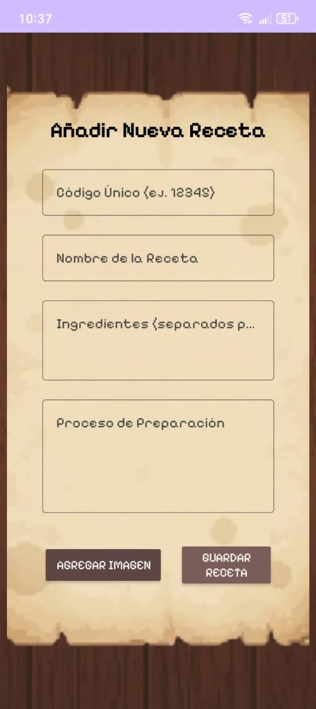
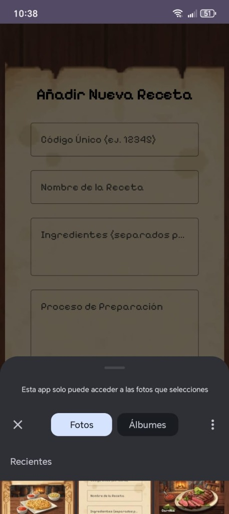
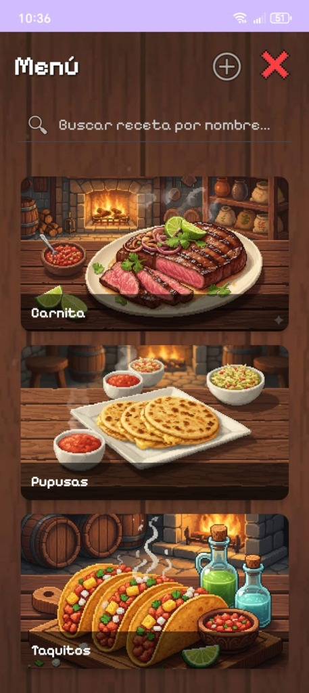
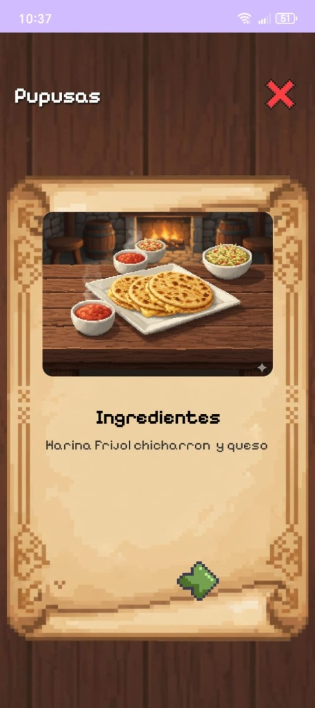

App Móvil de Recetas
Una aplicación móvil nativa diseñada para dispositivos Android. Programada enteramente en Java y estructurada con vistas XML, esta app ofrece una interfaz intuitiva para descubrir, guardar y gestionar recetas de cocina. Para asegurar disponibilidad sin conexión a internet, integra una base de datos local embebida mediante SQLite.
# Stack_Tecnológico
Java
Android Studio
SQLite
XML




